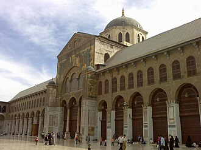

Presentazione
La grande mosquée des Omeyyades de Damas, construite entre 706 et 715, est un édifice religieux musulman bâti par le calife omeyyade Al Walid Ier.
جامع بني أمية الكبير، ويعرف اختصارًا بالجامع الأموي، هو المسجد الذي أمر الوليد بن عبد الملك بتشييده في دمشق، وهو من أشهر المساجد وأفخمها، وأحد عجائب الإسلام السبعة في العالم.
The Umayyad Mosque, also known as the Great Mosque of Damascus, located in the old city of Damascus, the capital of Syria, is one of the largest and oldest mosques in the world. It is considered to be the oldest mosque still in use in its original form. It innovated and influenced nascent Islamic architecture by introducing a more organized and monumental design compared to earlier mosques. It enjoyed great prestige throughout its history and was regarded as a "wonder of the world" by many medieval Muslim writers. Although the original structure has been altered several times due to fire, war damage, and repairs, it is one of the few mosques to maintain the same form and architectural features of its 8th-century construction, as well as its Umayyad character. The plan of the mosque with its courtyard surrounded by riwaqs and a covered praying area is based on the original plan of the Pro
Emevi Camii, Şam Ulu Cami olarak da bilinen yapı, Suriye'nin başkenti Şam'ın eski şehir kısmında yer alır ve dünyanın en büyük ve en eski camilerinden biridir.
Masjid Umayyah, atau lebih dikenal dengan Masjid Raya Damaskus adalah sebuah masjid terbesar dan tertua peninggalan Dinasti Umayyah yang berada di kota Damaskus, Kegubernuran Damaskus, Suriah. Bangunan ini awalnya merupakan tempat peribadatan Romawi, tempat menyembah Dewa Jupiter yaitu Kuil Jupiter Damaskus yang dibangun pada tahun 64 SM, tetapi setelah peristiwa Penaklukan Damaskus tahun 634, bangunan ini diubah menjadi sebuah kompleks yang berisi Basilika Katolik Roma yang didedikasikan untuk Santo Yohanes Pembaptis dan Musala di bagian tenggara untuk Muslim beribadah, kemudian secara final bangunan ini diubah dan ditingkatkan statusnya menjadi masjid pada tahun 706, atas perintah Khalifah Al-Walid bin Abdul-Malik dari Bani Umayyah.
مسجد امیہ شام کے قدیم شہر دمشق میں واقع دنیائے اسلام کی قدیم ترین مساجد میں سے ایک ہے۔
Die Umayyaden-Moschee, auch Omajjadenmoschee, ist eine Moschee in der syrischen Hauptstadt Damaskus. Sie ist eine der ältesten Moscheen der Welt und Vorbild für andere Moscheen im Baustil einer antiken Basilika. In vorislamischer Zeit wurde sie als eine Johannes dem Täufer geweihte, frühbyzantinische Kathedrale (Johannesbasilika) errichtet.
La Mezquita de los Omeyas o Gran Mezquita de Damasco es la mezquita más importante en Damasco, la capital de Siria, y una de las más antiguas y grandes del mundo. Fue construida por el califa omeya al-Walid I en el año 705 sobre la catedral bizantina dedicada a Juan el Bautista desde la época del emperador romano Constantino I.
La Grande Moschea degli Omayyadi, è il principale edificio di culto di Damasco, in Siria. Rappresenta un notevole esempio dell'architettura islamica.
A Mesquita dos Omíadas, Mesquita de Umayyad ou Grande Mesquita de Damasco está localizada na cidade de Damasco, capital da Síria. Faz parte do Patrimônio Mundial da UNESCO e é considerada o quarto lugar mais sagrado para os muçulmanos.
De Grote moskee van Damascus, ook wel de Omajjadenmoskee genoemd, is de belangrijkste moskee van de Syrische hoofdstad Damascus. De moskee is een belangrijk gebouw, zowel wat betreft de architectuur als de religieuze betekenis van dit heiligdom. Na de Arabische verovering van Damascus in 634 werd de moskee tussen 706 en 715 gebouwd door de Omajjadenkalief al-Walid I op de plaats van een christelijke basiliek toegewijd aan Johannes de Doper waar daarvoor een Jupitertempel en nog vroeger een Hadadtempel was. Bijzonder is dat het hoofd van Johannes de Doper er als relikwie bewaard zou zijn. Johannes de Doper wordt zowel door de christenen als door de moslims als profeet beschouwd.
ウマイヤ・モスク は、ダマスクスの旧市街にある世界で最も古いイスラーム教の礼拝所のひとつ。ダマスクスのマスジド・ジャーミイ（金曜モスク、大モスク）である。
우마이야 모스크(아랍어: جامع بني أمية الكبير) 또는 우마야드 모스크는 715년 우마이야 왕조 시대의 알 왈리드 1세에 의해 시리아 다마스쿠스에 대규모로 지어진 사원으로 수차례의 재앙과 더불어 1898년 대화재 때 대부분 손실되었고 현재는 복구된 모습이다. 사원의 돔 또한 목조였으나 화재 후 복원하였다. 내부에 성 요한의 무덤이 안치되어 있다.
उमय्यद मस्जिद; जिसे दमिश्क की महान मस्जिद के रूप में भी जाना जाता है जो सीरिया में दमिश्क के पुराने शहर में स्थित है। विश्व में सबसे पूरानी और सबसे बड़ी मस्जिदो में एक है, और कुछ मुसलमानों द्वारा इस्लाम में चौथा सबसे पवित्र स्थल माना जाता है। 634 ईस्वी में दमिशक की अरब मुस्लिम विजय बाद मस्जिद ईसाई और मुसलमानों द्वारा भविष्यद्वक्ता के रूप सम्मानित जॉन वैप्टिस्ट को समर्पित बनाई गई थी। इस्लामी शास्त्र द्वारा माना जाता है कि मस्जिद वह स्थान है जहाँ यीशु संसार के अन्तिम दिन आयेंगे।
Мече́ть Омейя́дов, также известная как Больша́я мече́ть Дама́ска, одна из крупнейших и старейших мечетей в мире. Расположена в одном из самых священных мест в старом городе Дамаска, представляет собой большую архитектурную ценность.
Nhà thờ Hồi giáo Umayyad hay Giáo đường Umayyad còn được gọi là Đại giáo đường Damascus là một nhà thờ Hồi giáo nằm ở thành phố cổ Damascus, là một trong những nhà thờ Hồi giáo lớn nhất và lâu đời nhất trên thế giới.
มัสยิดอุมัยยะฮ์ เป็นที่รู้จักกันในชื่อ มัสยิดใหญ่แห่งดามัสกัส ตั้งอยู่ในย่านเมืองเก่าของดามัสกัส เป็นหนึ่งในมัสยิดที่ใหญ่และเก่าแก่ที่สุดในโลก ชาวมุสลิมเชื่อว่ามัสยิดอุมัยยะฮ์เป็นมัสยิดศักดิ์สิทธิ์ลําดับที่ 4 ของศาสนาอิสลาม
Umayyadmoskén, också känd som Stora moskén eller Al-Walids stora moské, i Damaskus är en av världens största och äldsta moskéer och ett historiskt viktigt arkitektoniskt monument.
Marea Moschee din Damasc, cunoscută de asemenea și sub numele de Moscheea Omeiadă sau Moscheea Umayyadă, este una dintre cele mai mari și vechi moschei din lume. Ca importanță, această moschee este considerată al patrulea loc sfânt de către unii credincioși musulmani. Moscheea se află situată în partea veche a orașului Damasc, capitala Siriei. Înainte de cucerirea arabă a Damascului în anul 634, pe locul moscheii se afla o bazilică închinată lui Ioan Botezătorul, considerat profet atât de creștini, cât și de musulmani, care îl recunosc sub numele de Yahya. Se presupune că în moschee s-ar afla capul acestuia. De asemenea, mormântul lui Saladin se află într-o gradină a moscheii.
Storie e racconti
Fatto storicoDal tempio alla moschea
Il luogo è sacro da tremila anni: gli Aramei vi adoravano il dio Hadad, poi i Romani vi costruirono un immenso tempio di Giove, le cui mura circondano ancora la moschea. Sotto Bisanzio divenne la cattedrale di San Giovanni Battista. Dopo la conquista musulmana del 634, una parte fu riservata alla preghiera dei musulmani, accanto ai cristiani. Verso il 705 il califfo al-Walid I acquistò l'insieme, diede ai cristiani altre chiese come compensazione e costruì la grande moschea, completata nel 715.
Fonte: Wikipedia : Umayyad Mosque · UNESCO : Ancient City of Damascus
TradizioneLa testa di Yahya (Giovanni Battista)
Nella sala di preghiera sorge un piccolo santuario venerato: secondo una tradizione, contiene la testa del profeta Yahya, che i cristiani chiamano Giovanni Battista. Questa tradizione risale al VI secolo, prima dell'islam, ed è condivisa da cristiani e musulmani. Si racconta che durante i lavori di al-Walid fu scoperta una grotta che conteneva questo reliquiario. Nessuna prova storica permette di confermare che si tratti davvero della sua testa: è una tradizione, non un fatto accertato. Nel 2001 papa Giovanni Paolo II vi si raccolse in preghiera durante la sua visita alla moschea.
Fonte: Wikipedia : Umayyad Mosque
TradizioneIl minareto di Gesù
In un lungo hadith autentico riportato da Muslim (n. 2937), secondo an-Nawwas ibn Sam'an, il Profeta ﷺ annuncia che alla fine dei tempi Gesù figlio di Maria scenderà presso il minareto bianco, a est di Damasco, con le mani posate sulle ali di due angeli. L'hadith in sé è sahih. Invece, l'identificazione di questo «minareto bianco» con il minareto sud-est della Grande Moschea, chiamato «minareto di Gesù» (Isa), è una tradizione popolare. Questo minareto è stato distrutto e ricostruito più volte, per esempio dopo un assedio nel 1245.
Fatto storicoI mosaici d'oro di al-Walid
Al-Walid volle una moschea senza pari: circa 4000 m² di mosaici a fondo oro coprivano il cortile e la sala di preghiera, forse la più grande superficie di mosaico d'oro al mondo. Mostrano alberi, fiumi e palazzi, senza alcun essere vivente. Il geografo al-Muqaddasi, nel X secolo, diceva che vi si vedeva quasi ogni albero e ogni città conosciuta. Lo storico Ibn Asakir racconta che al-Walid ottenne dall'imperatore bizantino 200 artigiani; questo dettaglio è discusso dagli storici. Il grande pannello detto «del Barada», lungo 34 m, si vede ancora oggi.
Fonte: Wikipedia : Umayyad Mosque
Fatto storicoL'incendio del 1893
Nel 1893 un operaio che riparava il tetto fumava il suo narghilè; una brace diede fuoco alla struttura del tetto. L'incendio devastò la sala di preghiera e fece crollare la grande cupola centrale, chiamata «cupola dell'Aquila». Gli Ottomani restaurarono completamente la moschea, e la nuova cupola fu costruita in pietra anziché in legno. Non era il primo incendio: la moschea era già bruciata nel 1069, e fu gravemente danneggiata durante l'invasione di Tamerlano nel 1401.
Fonte: Wikipedia : Umayyad Mosque
TradizioneIl santuario di al-Husayn
Nell'angolo est della moschea, due sale ricordano al-Husayn, nipote del Profeta ﷺ, ucciso a Karbala nel 680. Secondo una tradizione, la sua testa fu portata a Damasco, al palazzo del califfo Yazid, e un santuario segna il luogo dove sarebbe stata deposta. Il luogo in cui riposa realmente la testa è discusso: Damasco, Karbala, il Cairo e altre città sono citate dalle fonti. Il santuario attira oggi numerosi visitatori, sunniti come sciiti.
Fonte: Wikipedia : Umayyad Mosque
Sulla mappa
Documenti e link
- Wikipédia — Français
- Wikipédia — العربية
- Wikipédia — English
- Wikipédia — Türkçe
- Wikipédia — Bahasa Indonesia
- Wikipédia — اردو
- Wikipédia — Deutsch
- Wikipédia — Español
- Wikipédia — Italiano
- Wikipédia — Português
- Wikipédia — Nederlands
- Wikipédia — 中文
- Wikipédia — 日本語
- Wikipédia — 한국어
- Wikipédia — हिन्दी
- Wikipédia — Русский
- Wikipédia — Tiếng Việt
- Wikipédia — ไทย
- Wikipédia — Svenska
- Wikipédia — Română
- Wikidata — Q183562
Dati: Wikidata (CC0), aggiornati ogni 3 mesi. L'anno è la data di costruzione conosciuta più antica dell'edificio: per un edificio diventato moschea in seguito (come Santa Sofia), è quella dell'edificio originario. Foto: Wikimedia Commons, autore e licenza nella pagina di ogni foto.